Web Server Statistics for proveyouownit.com
Web Server Statistics for proveyouownit.com
Program started on Thu, Apr 11 2013 at 7:35 PM.
Analyzed requests from Mon, Apr 01 2013 at 8:40 PM to Thu, Apr 11 2013 at 11:22 AM (9.61 days).
Web Server Statistics for proveyouownit.comProgram started on Thu, Apr 11 2013 at 7:35 PM.
Analyzed requests from Mon, Apr 01 2013 at 8:40 PM to Thu, Apr 11 2013 at 11:22 AM (9.61 days).
(Go To: Top | General Summary | Monthly Report | Daily Summary | Hourly Summary | Domain Report | Organization Report | Redirected Referrer Report | Failed Referrer Report | Referring Site Report | Browser Report | Browser Summary | Operating System Report | Status Code Report | File Size Report | File Type Report | Directory Report | Request Report)
Figures in parentheses refer to the 7-day period ending Apr 11 2013 at 7:35 PM.
Successful requests: 1,488 (146)
Average successful requests per day: 154 (20)
Successful requests for pages: 118 (38)
Average successful requests for pages per day: 12 (5)
Failed requests: 299 (7)
Redirected requests: 15 (0)
Distinct files requested: 53 (5)
Distinct hosts served: 40 (5)
Data transferred: 19.09 megabytes (2.86 megabytes)
Average data transferred per day: 1.99 megabytes (418.25 kilobytes)
(Go To: Top | General Summary | Monthly Report | Daily Summary | Hourly Summary | Domain Report | Organization Report | Redirected Referrer Report | Failed Referrer Report | Referring Site Report | Browser Report | Browser Summary | Operating System Report | Status Code Report | File Size Report | File Type Report | Directory Report | Request Report)
Each unit ( ) represents 3 requests for pages or part thereof.
) represents 3 requests for pages or part thereof.
| month | #reqs | #pages | |
|---|---|---|---|
| Apr 2013 | 1488 | 118 |   |
Busiest month: Apr 2013 (118 requests for pages).
(Go To: Top | General Summary | Monthly Report | Daily Summary | Hourly Summary | Domain Report | Organization Report | Redirected Referrer Report | Failed Referrer Report | Referring Site Report | Browser Report | Browser Summary | Operating System Report | Status Code Report | File Size Report | File Type Report | Directory Report | Request Report)
Each unit () represents 2 requests for pages or part thereof.
| day | #reqs | #pages | |
|---|---|---|---|
| Sun | 40 | 4 |  |
| Mon | 10 | 10 |  |
| Tue | 1203 | 60 |  |
| Wed | 157 | 21 | |
| Thu | 14 | 11 | |
| Fri | 20 | 8 | |
| Sat | 44 | 4 | |
(Go To: Top | General Summary | Monthly Report | Daily Summary | Hourly Summary | Domain Report | Organization Report | Redirected Referrer Report | Failed Referrer Report | Referring Site Report | Browser Report | Browser Summary | Operating System Report | Status Code Report | File Size Report | File Type Report | Directory Report | Request Report)
Each unit () represents 1 request for a page.
| hour | #reqs | #pages | |
|---|---|---|---|
| 0 | 12 | 5 | |
| 1 | 6 | 0 | |
| 2 | 3 | 2 | |
| 3 | 1 | 1 | |
| 4 | 1 | 1 | |
| 5 | 3 | 3 | |
| 6 | 4 | 3 | |
| 7 | 6 | 6 | |
| 8 | 53 | 1 | |
| 9 | 2 | 1 | |
| 10 | 7 | 6 | |
| 11 | 6 | 6 | |
| 12 | 33 | 4 | |
| 13 | 8 | 8 | |
| 14 | 704 | 14 | |
| 15 | 230 | 7 | |
| 16 | 89 | 8 | |
| 17 | 80 | 10 | |
| 18 | 123 | 12 | |
| 19 | 36 | 3 | |
| 20 | 2 | 2 | |
| 21 | 38 | 7 | |
| 22 | 36 | 3 | |
| 23 | 5 | 5 | |
(Go To: Top | General Summary | Monthly Report | Daily Summary | Hourly Summary | Domain Report | Organization Report | Redirected Referrer Report | Failed Referrer Report | Referring Site Report | Browser Report | Browser Summary | Operating System Report | Status Code Report | File Size Report | File Type Report | Directory Report | Request Report)
Listing domains, sorted by the amount of traffic.
| #reqs | %bytes | domain |
|---|---|---|
| 1488 | 100% | [unresolved numerical addresses] |
(Go To: Top | General Summary | Monthly Report | Daily Summary | Hourly Summary | Domain Report | Organization Report | Redirected Referrer Report | Failed Referrer Report | Referring Site Report | Browser Report | Browser Summary | Operating System Report | Status Code Report | File Size Report | File Type Report | Directory Report | Request Report)
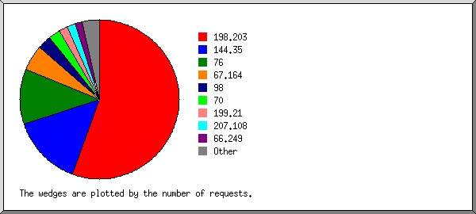
Listing the top 20 organizations by the number of requests, sorted by the number of requests.
| #reqs | %bytes | organization |
|---|---|---|
| 826 | 19.98% | 198.203 |
| 213 | 33.59% | 144.35 |
| 168 | 13.86% | 76 |
| 79 | 8.60% | 67.164 |
| 41 | 4.31% | 98 |
| 35 | 4.43% | 70 |
| 28 | 0.67% | 199.21 |
| 25 | 7.79% | 207.108 |
| 21 | 1.71% | 66.249 |
| 11 | 4.41% | 66.87 |
| 9 | 0.15% | 69 |
| 4 | 0.05% | 38 |
| 4 | 0.08% | 208.90 |
| 3 | 0.01% | 75 |
| 3 | 0.07% | 198.186 |
| 2 | 0.02% | 216.139 |
| 2 | 0.05% | 199.115 |
| 2 | 0.05% | 82 |
| 2 | 0.05% | 64.202 |
| 2 | 208.80 | |
| 8 | 0.13% | [not listed: 8 organizations] |
(Go To: Top | General Summary | Monthly Report | Daily Summary | Hourly Summary | Domain Report | Organization Report | Redirected Referrer Report | Failed Referrer Report | Referring Site Report | Browser Report | Browser Summary | Operating System Report | Status Code Report | File Size Report | File Type Report | Directory Report | Request Report)
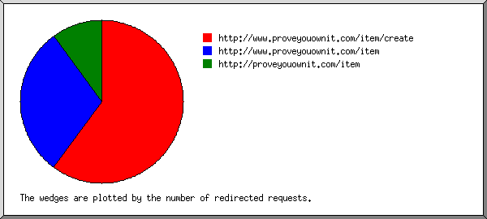
Listing referring URLs, sorted by the number of redirected requests.
| #reqs | URL |
|---|---|
| 6 | http://www.proveyouownit.com/item/create |
| 3 | http://www.proveyouownit.com/item |
| 1 | http://proveyouownit.com/item |
(Go To: Top | General Summary | Monthly Report | Daily Summary | Hourly Summary | Domain Report | Organization Report | Redirected Referrer Report | Failed Referrer Report | Referring Site Report | Browser Report | Browser Summary | Operating System Report | Status Code Report | File Size Report | File Type Report | Directory Report | Request Report)
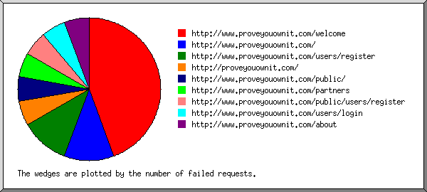
Listing referring URLs, sorted by the number of failed requests.
(Go To: Top | General Summary | Monthly Report | Daily Summary | Hourly Summary | Domain Report | Organization Report | Redirected Referrer Report | Failed Referrer Report | Referring Site Report | Browser Report | Browser Summary | Operating System Report | Status Code Report | File Size Report | File Type Report | Directory Report | Request Report)
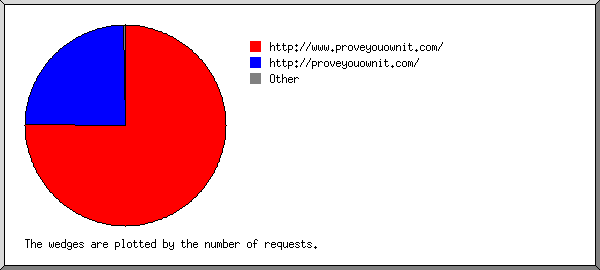
Listing referring sites, sorted by the number of requests.
| #reqs | site |
|---|---|
| 1011 | http://www.proveyouownit.com/ |
| 332 | http://proveyouownit.com/ |
| 2 | http://us-mg5.mail.yahoo.com/ |
| 1 | http://evuln.com/ |
(Go To: Top | General Summary | Monthly Report | Daily Summary | Hourly Summary | Domain Report | Organization Report | Redirected Referrer Report | Failed Referrer Report | Referring Site Report | Browser Report | Browser Summary | Operating System Report | Status Code Report | File Size Report | File Type Report | Directory Report | Request Report)
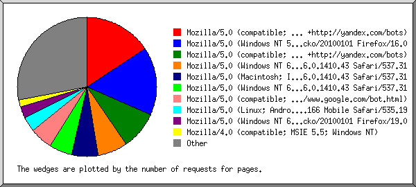
Listing browsers with at least 1 request for a page, sorted by the number of requests for pages.
| #reqs | #pages | browser |
|---|---|---|
| 18 | 18 | Mozilla/5.0 (compatible; YandexBot/3.0; MirrorDetector; +http://yandex.com/bots) |
| 826 | 18 | Mozilla/5.0 (Windows NT 5.1; rv:16.0) Gecko/20100101 Firefox/16.0 |
| 10 | 10 | Mozilla/5.0 (compatible; YandexBot/3.0; +http://yandex.com/bots) |
| 129 | 8 | Mozilla/5.0 (Windows NT 6.2; WOW64) AppleWebKit/537.31 (KHTML, like Gecko) Chrome/26.0.1410.43 Safari/537.31 |
| 63 | 7 | Mozilla/5.0 (Macintosh; Intel Mac OS X 10_7_5) AppleWebKit/537.31 (KHTML, like Gecko) Chrome/26.0.1410.43 Safari/537.31 |
| 58 | 6 | Mozilla/5.0 (Windows NT 6.1; WOW64) AppleWebKit/537.31 (KHTML, like Gecko) Chrome/26.0.1410.43 Safari/537.31 |
| 18 | 6 | Mozilla/5.0 (compatible; Googlebot/2.1; +http://www.google.com/bot.html) |
| 14 | 4 | Mozilla/5.0 (Linux; Android 4.0.3; PG86100 Build/IML74K) AppleWebKit/535.19 (KHTML, like Gecko) Chrome/18.0.1025.166 Mobile Safari/535.19 |
| 42 | 3 | Mozilla/5.0 (Windows NT 6.2; WOW64; rv:19.0) Gecko/20100101 Firefox/19.0 |
| 2 | 2 | Mozilla/4.0 (compatible; MSIE 5.5; Windows NT) |
| 34 | 2 | Mozilla/5.0 (Windows NT 6.2; WOW64) AppleWebKit/537.22 (KHTML, like Gecko) Chrome/25.0.1364.172 Safari/537.22 |
| 46 | 2 | Mozilla/5.0 (Windows NT 6.1; WOW64; rv:19.0) Gecko/20100101 Firefox/19.0 |
| 2 | 2 | Mozilla/4.0 (compatible; MSIE 7.0b; Windows NT 6.0) |
| 2 | 2 | Mozilla/4.0 (compatible; MSIE 7.0; Windows NT 5.1) |
| 2 | 2 | Opera/9.64 (Windows NT 5.1; U; en) Presto/2.1.1 |
| 27 | 2 | Mozilla/5.0 (X11; Linux x86_64) AppleWebKit/537.22 (KHTML, like Gecko) Chrome/25.0.1364.172 Safari/537.22 |
| 2 | 2 | Mozilla/5.0 (Windows; U; Windows NT 5.1; en-US; rv:1.9.1.8) Gecko/20100202 Firefox/3.5.8 ( .NET CLR 3.5.30729) |
| 4 | 2 | Mozilla/5.0 (Macintosh; Intel Mac OS X 10.6; rv:2.0.1) Gecko/20100101 Firefox/4.0.1 |
| 1 | 1 | Mozilla/5.0 (Macintosh; Intel Mac OS X 10.7; rv:14.0) Gecko/20100101 Firefox/14.0.1 |
| 41 | 1 | Mozilla/5.0 (X11; Ubuntu; Linux x86_64; rv:20.0) Gecko/20100101 Firefox/20.0 |
| 10 | 1 | Mozilla/5.0 (compatible; MSIE 10.0; Windows NT 6.1; WOW64; Trident/6.0) |
| 1 | 1 | Mozilla/4.0 (compatible; MSIE 6.0; America Online Browser 1.1; rev1.5; Windows NT 5.1; SV1; .NET CLR 1.1.4322) |
| 29 | 1 | Mozilla/5.0 (Windows NT 5.1; rv:20.0) Gecko/20100101 Firefox/20.0 |
| 41 | 1 | Mozilla/5.0 (Windows NT 6.1; rv:19.0) Gecko/20100101 Firefox/19.0 |
| 1 | 1 | Mozilla/5.0 (Windows NT 5.1) Gecko/20100101 Firefox/9.0.1 |
| 8 | 1 | Mozilla/4.0 (compatible; MSIE 8.0; Windows NT 6.1; WOW64; Trident/4.0; SLCC2; .NET CLR 2.0.50727; .NET CLR 3.5.30729; .NET CLR 3.0.30729; Media Center PC 6.0; .NET4.0C; InfoPath.3; MS-RTC LM 8) |
| 1 | 1 | Lynx/2.8.5rel.1 libwww-FM/2.15FC SSL-MM/1.4.1c OpenSSL/0.9.7e-dev |
| 1 | 1 | Mozilla/4.0 (compatible; Win32; WinHttp.WinHttpRequest.5) |
| 1 | 1 | Mozilla/5.0 (compatible; bingbot/2.0; +http://www.bing.com/bingbot.htm) |
| 34 | 1 | Mozilla/5.0 (Windows NT 6.2; WOW64) AppleWebKit/537.22 (KHTML, like Gecko) Chrome/25.0.1364.160 Safari/537.22 |
| 1 | 1 | Mozilla/4.0 (compatible; http://search.thunderstone.com/texis/websearch/about.html) |
| 9 | 1 | Mozilla/5.0 (X11; Ubuntu; Linux i686; rv:14.0; ips-agent) Gecko/20100101 Firefox/14.0.1 |
| 1 | 1 | Mozilla/4.0 (compatible; MSIE 6.0; Windows NT 5.1; SV1; .NET CLR 1.1.4322; .NET CLR 2.0.50728) |
| 1 | 1 | Mozilla/5.0 (Macintosh; U; Intel Mac OS X 10.5; en-US; rv:1.9.2.13) Gecko/20101203 Firefox/3.6.13 GTB7.1 |
| 4 | 0 | [not listed: 1 browser] |
(Go To: Top | General Summary | Monthly Report | Daily Summary | Hourly Summary | Domain Report | Organization Report | Redirected Referrer Report | Failed Referrer Report | Referring Site Report | Browser Report | Browser Summary | Operating System Report | Status Code Report | File Size Report | File Type Report | Directory Report | Request Report)
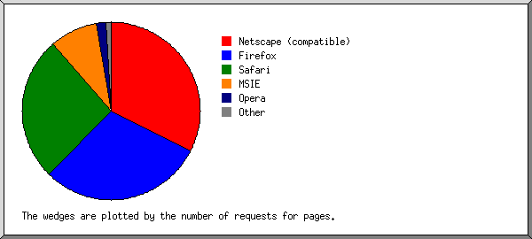
Listing browsers with at least 1 request for a page, sorted by the number of requests for pages.
| # | #reqs | #pages | browser |
|---|---|---|---|
| 1 | 49 | 37 | Netscape (compatible) |
| 2 | 1043 | 34 | Firefox |
| 826 | 18 | Firefox/16 | |
| 129 | 6 | Firefox/19 | |
| 3 | 3 | Firefox/3 | |
| 70 | 2 | Firefox/20 | |
| 4 | 2 | Firefox/4 | |
| 10 | 2 | Firefox/14 | |
| 1 | 1 | Firefox/9 | |
| 3 | 359 | 30 | Safari |
| 345 | 26 | Safari/537 | |
| 14 | 4 | Safari/535 | |
| 4 | 26 | 10 | MSIE |
| 4 | 4 | MSIE/7 | |
| 2 | 2 | MSIE/5 | |
| 2 | 2 | MSIE/6 | |
| 8 | 1 | MSIE/8 | |
| 10 | 1 | MSIE/10 | |
| 5 | 2 | 2 | Opera |
| 2 | 2 | Opera/9 | |
| 6 | 1 | 1 | Lynx |
| 1 | 1 | Lynx/2 | |
| 4 | 0 | [not listed: 1 browser] |
(Go To: Top | General Summary | Monthly Report | Daily Summary | Hourly Summary | Domain Report | Organization Report | Redirected Referrer Report | Failed Referrer Report | Referring Site Report | Browser Report | Browser Summary | Operating System Report | Status Code Report | File Size Report | File Type Report | Directory Report | Request Report)
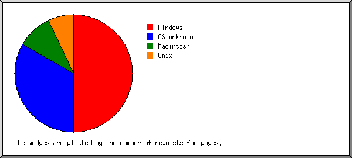
Listing operating systems, sorted by the number of requests for pages.
| # | #reqs | #pages | OS |
|---|---|---|---|
| 1 | 1270 | 57 | Windows |
| 864 | 28 | Windows XP | |
| 404 | 27 | Unknown Windows | |
| 2 | 2 | Windows NT | |
| 2 | 50 | 38 | OS unknown |
| 3 | 69 | 11 | Macintosh |
| 4 | 91 | 8 | Unix |
| 91 | 8 | Linux | |
| 5 | 4 | 0 | Known robots |
(Go To: Top | General Summary | Monthly Report | Daily Summary | Hourly Summary | Domain Report | Organization Report | Redirected Referrer Report | Failed Referrer Report | Referring Site Report | Browser Report | Browser Summary | Operating System Report | Status Code Report | File Size Report | File Type Report | Directory Report | Request Report)
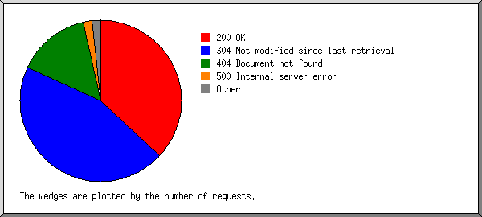
Listing status codes, sorted numerically.
| #reqs | status code |
|---|---|
| 665 | 200 OK |
| 15 | 206 Partial content |
| 3 | 301 Document moved permanently |
| 12 | 302 Document found elsewhere |
| 808 | 304 Not modified since last retrieval |
| 267 | 404 Document not found |
| 32 | 500 Internal server error |
(Go To: Top | General Summary | Monthly Report | Daily Summary | Hourly Summary | Domain Report | Organization Report | Redirected Referrer Report | Failed Referrer Report | Referring Site Report | Browser Report | Browser Summary | Operating System Report | Status Code Report | File Size Report | File Type Report | Directory Report | Request Report)
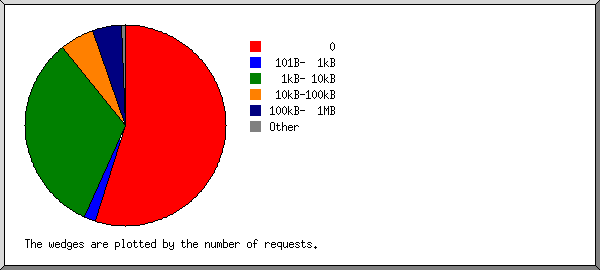
| size | #reqs | %bytes |
|---|---|---|
| 0 | 815 | |
| 1B- 10B | 8 | |
| 11B- 100B | 1 | |
| 101B- 1kB | 28 | 0.07% |
| 1kB- 10kB | 484 | 9.93% |
| 10kB-100kB | 83 | 19.67% |
| 100kB- 1MB | 69 | 70.33% |
(Go To: Top | General Summary | Monthly Report | Daily Summary | Hourly Summary | Domain Report | Organization Report | Redirected Referrer Report | Failed Referrer Report | Referring Site Report | Browser Report | Browser Summary | Operating System Report | Status Code Report | File Size Report | File Type Report | Directory Report | Request Report)
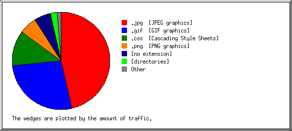
Listing extensions with at least 0.1% of the traffic, sorted by the amount of traffic.
| #reqs | %bytes | extension |
|---|---|---|
| 137 | 46.36% | .jpg [JPEG graphics] |
| 153 | 26.90% | .gif [GIF graphics] |
| 401 | 11.97% | .css [Cascading Style Sheets] |
| 342 | 5.75% | .png [PNG graphics] |
| 334 | 5.50% | [no extension] |
| 118 | 2.27% | [directories] |
| 1 | 0.66% | .js [JavaScript code] |
| 1 | 0.50% | .ico |
| 1 | 0.10% | [not listed: 1 extension] |
(Go To: Top | General Summary | Monthly Report | Daily Summary | Hourly Summary | Domain Report | Organization Report | Redirected Referrer Report | Failed Referrer Report | Referring Site Report | Browser Report | Browser Summary | Operating System Report | Status Code Report | File Size Report | File Type Report | Directory Report | Request Report)
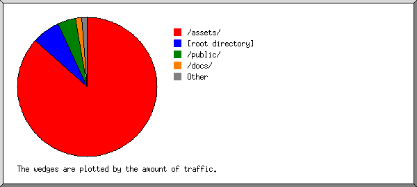
Listing directories with at least 0.01% of the traffic, sorted by the amount of traffic.
| #reqs | %bytes | directory |
|---|---|---|
| 990 | 86.67% | /assets/ |
| 355 | 6.46% | [root directory] |
| 48 | 4.27% | /public/ |
| 11 | 1.46% | /docs/ |
| 67 | 0.90% | /users/ |
| 17 | 0.24% | /item/ |
(Go To: Top | General Summary | Monthly Report | Daily Summary | Hourly Summary | Domain Report | Organization Report | Redirected Referrer Report | Failed Referrer Report | Referring Site Report | Browser Report | Browser Summary | Operating System Report | Status Code Report | File Size Report | File Type Report | Directory Report | Request Report)
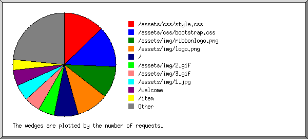
Listing files with at least 20 requests, sorted by the number of requests.
| #reqs | %bytes | last time | file |
|---|---|---|---|
| 191 | 0.48% | Apr/ 9/13 3:24 PM | /assets/css/style.css |
| 191 | 0.48% | Apr/ 9/13 3:24 PM | /assets/css/style.css?1364934148 |
| 191 | 10.88% | Apr/ 9/13 3:24 PM | /assets/css/bootstrap.css |
| 191 | 10.88% | Apr/ 9/13 3:24 PM | /assets/css/bootstrap.css?1364934148 |
| 148 | 3.88% | Apr/11/13 10:10 AM | /assets/img/ribbonlogo.png |
| 148 | 3.88% | Apr/11/13 10:10 AM | /assets/img/ribbonlogo.png?1364934148 |
| 147 | 0.90% | Apr/ 9/13 3:24 PM | /assets/img/logo.png |
| 147 | 0.90% | Apr/ 9/13 3:24 PM | /assets/img/logo.png?1364934148 |
| 114 | 2.22% | Apr/11/13 11:22 AM | / |
| 75 | 12.85% | Apr/ 9/13 3:24 PM | /assets/img/2.gif |
| 75 | 12.85% | Apr/ 9/13 3:24 PM | /assets/img/2.gif?1364934148 |
| 75 | 12.88% | Apr/11/13 6:35 AM | /assets/img/3.gif |
| 75 | 12.88% | Apr/11/13 6:35 AM | /assets/img/3.gif?1364934148 |
| 74 | 40.83% | Apr/ 9/13 3:24 PM | /assets/img/1.jpg |
| 74 | 40.83% | Apr/ 9/13 3:24 PM | /assets/img/1.jpg?1364934148 |
| 73 | 1.76% | Apr/ 7/13 6:00 PM | /welcome |
| 50 | 0.71% | Apr/ 9/13 3:24 PM | /item |
| 42 | 0.66% | Apr/ 9/13 3:24 PM | /about |
| 39 | 0.48% | Apr/ 9/13 3:24 PM | /contact |
| 37 | 0.62% | Apr/ 7/13 6:00 PM | /partners |
| 36 | 0.47% | Apr/ 7/13 6:00 PM | /users/register |
| 31 | 0.42% | Apr/ 7/13 6:00 PM | /users/login |
| 30 | 2.33% | Apr/ 7/13 3:34 PM | /assets/img/bestbuy.jpg |
| 30 | 2.33% | Apr/ 7/13 3:34 PM | /assets/img/bestbuy.jpg?1364934148 |
| 30 | 0.66% | Apr/ 7/13 3:34 PM | /assets/img/amazon.png |
| 30 | 0.66% | Apr/ 7/13 3:34 PM | /assets/img/amazon.png?1364934148 |
| 29 | 0.98% | Apr/11/13 9:16 AM | /assets/img/rcwilley.jpg |
| 29 | 0.98% | Apr/11/13 9:16 AM | /assets/img/rcwilley.jpg?1364934148 |
| 76 | 5.97% | Apr/ 7/13 6:00 PM | [not listed: 33 files] |